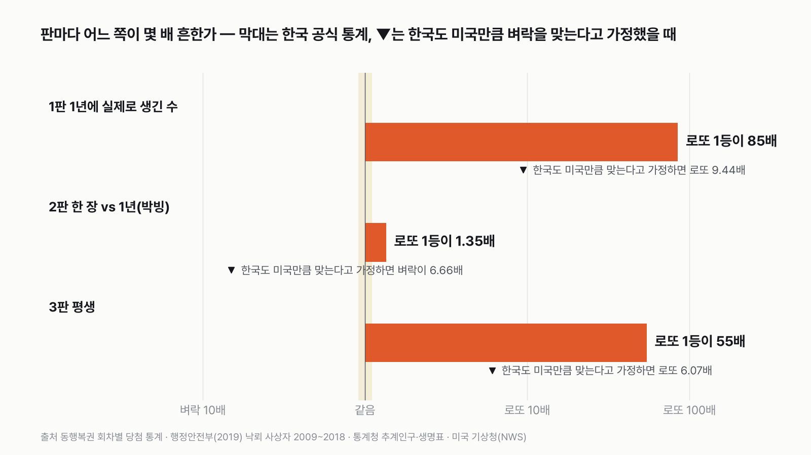
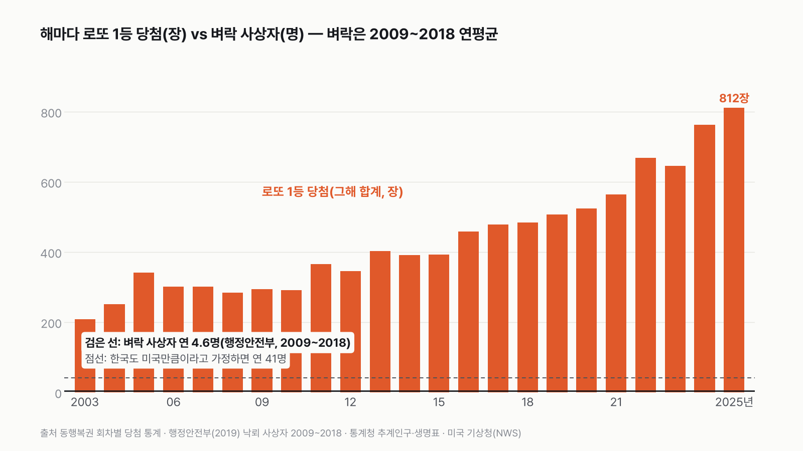
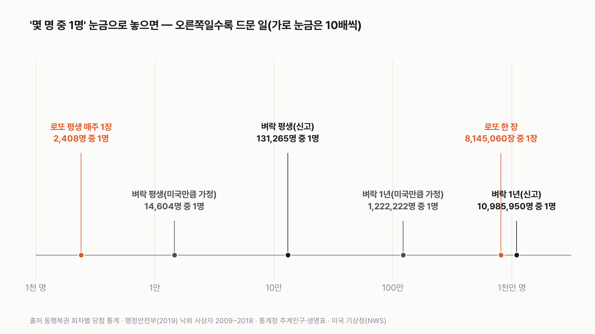

한국에서 로또 1등 되기 vs 벼락 맞기, 뭐가 더 흔할까
결과를 보기 전에 먼저 골라 주세요. 투표하면 독자 예상과 데이터 결과를 나란히 보여 드려요.
독자 투표
- "로또 1등 될 확률은 벼락 맞을 확률보다 낮다"는 말, 한 번은 들어 봤을 거예요.
- 정말 그럴까요? 한국에서 실제로 1년에 로또 1등이 몇 번 나오고, 몇 명이 벼락을 맞는지 공식 통계로 세어 봤어요.
- 실제로 생긴 수, 한 번의 확률, 평생의 확률 세 판으로 겨뤘어요. 투표하면 결과가 바로 아래에 열려요.
조건과 규칙
- 로또는 로또6/45 1등이에요. 동행복권이 공개한 회차별 1등 당첨 수와 판매 장수를 써요.
- 벼락은 벼락(낙뢰)으로 죽거나 다친 사람이에요. 행정안전부가 공개한 10년치 사상자 수를 써요.
- 세 판으로 겨뤄요. 1년에 실제로 생긴 수, 로또 한 장과 벼락 1년의 확률, 그리고 평생의 확률이에요.
결과 요약
3판 3승 0패(2판은 박빙) → 최종 로또 1등 승
- 한국에서는 로또 1등이 벼락보다 훨씬 흔해요. 같은 10년(2009~2018) 동안 로또 1등 당첨은 1년에 390장, 벼락 사상자는 1년에 4.6명이에요. 85배예요.
- 다만 '로또 한 장'과 '벼락 1년'을 맞대면 1.35배로 박빙이에요. 벼락 사상자가 신고된 숫자의 1.35배면 비기고, 1.48배면 뒤집혀요.
- "로또가 벼락보다 어렵다"는 말은 한국 신고 통계로는 틀렸어요. 한국 사람도 미국 사람만큼 벼락을 맞는다고 가정하면, 로또 한 장끼리 비교할 때만 맞아요.
그래서? 한국에서는 해마다 로또 1등 당첨이 수백 장 나오고, 벼락 사상자는 손에 꼽아요. 로또 1등이 흔한 이유는 한 장의 확률이 높아서가 아니라 한 해에 수십억 장이 팔리기 때문이에요.
독자 예상 vs 데이터 결과
한국에서 로또 1등 되기 vs 벼락 맞기, 뭐가 더 흔할까?
데이터로 보면 로또 1등. 1년에 로또 1등 당첨은 390장(2009~2018 평균), 벼락 사상자는 4.6명이에요. 다만 '로또 한 장 vs 벼락 1년'은 1.35배로 박빙이에요.


숫자 두 개로 줄이면 이래요. 로또 한 장이 1등이 될 확률은 814만 장 중 1장이에요. 그런데 2009~2018년 한국에서는 해마다 로또가 평균 31억 장 팔려서, 1등 당첨이 1년에 390장 나왔어요.
| 판 | 로또 1등 | 벼락 | 승자 |
|---|---|---|---|
| 1판 1년에 생긴 수 | 390.5장 | 4.6명 | 로또 1등(85배) |
| 2판 한 장 vs 1년 | 814만 장 중 1장 | 1,099만 명 중 1명 | 로또 1등(1.35배, 박빙) |
| 3판 평생 | 2,408명 중 1명 | 13만 1,265명 중 1명 | 로또 1등(55배) |
| 최종 | 3판 3승 0패 → 로또 1등 승 |
이 규칙과 자료면 최종 승자는 로또 1등이에요. 세 판 모두 로또가 이겼어요. 다만 판마다 버티는 힘이 달라요. 1판과 3판은 벼락 쪽을 크게 늘려도 로또가 이기지만, 2판은 벼락 사상자가 조금만 더 있어도 뒤집혀요.
1판 1년에 생긴 수: 로또 1등 승(85배)
행정안전부가 2019년에 낸 자료를 보면, 2009~2018년 10년 동안 벼락으로 다치거나 숨진 사람은 모두 46명이에요. 1년에 4.6명이에요. 같은 10년 동안 로또 1등 당첨은 3,905장 나왔어요. 1년에 390장이에요. 85배 차이예요. 당첨 장 수라서, 한 사람이 같은 회차에 수동으로 같은 번호를 여러 장 사서 1등이 겹친 경우도 따로 셌어요.
저도 이 숫자를 보고 놀랐어요. "벼락 맞을 확률보다 낮다"는 말을 워낙 많이 들어서, 적어도 비슷할 줄 알았거든요. 그런데 한국에서 벼락 사상자는 1년에 다섯 명 안팎이고, 로또 1등 당첨은 매주 7~8장씩 나와요.
로또 1등 당첨은 해가 갈수록 늘었어요. 판매가 늘었기 때문이에요. 2025년에는 62억 장이 팔렸고 1등 당첨이 812장 나왔어요. 벼락 사상자 2009~2018년 연평균(4.6명)과 대면 176배예요. 2019년 뒤의 벼락 공식 합계는 찾지 못해서 같은 해끼리는 비교하지 못했어요.


2판 한 장 vs 1년: 로또 1등 승(1.35배, 박빙)
여기서 통념이 나온 이유가 보여요. 로또 한 장이 1등이 될 확률은 814만 5,060장 중 1장이에요. 45개 숫자 가운데 6개를 고르는 방법의 수예요. 한국 사람 한 명이 1년 동안 벼락을 맞을 확률은 사상자 4.6명을 인구 5,054만 명으로 나눈 1,099만 명 중 1명이에요. 로또 한 장이 1.35배 흔해요. 무승부 기준(1.1배)을 겨우 넘었어요. 벼락 사상자가 신고된 숫자의 1.35배(1년에 6.2명)면 비기고, 1.48배(1년에 6.8명)면 벼락 쪽으로 뒤집혀요.
로또를 1년에 한 장만 사는 사람은 드물어요. 매주 한 장씩 1년에 52장을 사면, 그해 1등이 될 확률은 벼락 1년의 70배예요.
"로또가 벼락보다 어렵다"는 말은 대개 미국 숫자에서 왔어요. 미국 기상청은 미국인이 1년에 벼락을 맞을 확률을 122만 명 중 1명으로 계산해요. 이 숫자와 로또 한 장을 비교하면 벼락이 6.7배 흔해요. 같은 비교를 한국 신고 통계로 하면 결과가 뒤집혀요.
3판 평생: 로또 1등 승(55배)
로또는 19살부터 살 수 있어요. 그래서 로또는 19살부터, 벼락은 태어나서부터 셌어요. 19살의 기대여명은 65.1년이라, 그때부터 매주 한 장씩 사면 모두 3,383장이에요. 평생 한 번이라도 1등이 될 확률은 2,408분의 1이에요. 벼락은 태어나서 기대수명(83.7세)까지 따지면 13만 1,265분의 1이에요. 로또가 55배 흔해요. 한 달에 한 장만 사도 12.6배로 로또가 이겨요. 평생 벼락 맞을 확률과 같아지려면 로또를 평생 62장만 사면 돼요.


가정을 바꾸면
벼락 쪽부터 봐요. 행정안전부 숫자는 신고된 사상자라, 가볍게 다치고 신고하지 않은 사람은 빠졌을 수 있어요. 미국 기상청은 신고된 사망자 27명에 부상자를 사망자의 9배로 어림해 더해서, 미국에서 1년에 270명이 벼락을 맞는다고 봐요. 부상자 수는 잰 값이 아니라 어림이고, 미국은 땅이 넓고 벼락도 많아서 한국과 사정이 달라요. 그래도 한국 사람도 미국 사람만큼 벼락을 맞는다고 가정해 보면 1년에 41명이에요. 이 가정에서도 1판은 로또가 9.4배, 3판은 6.1배로 이겨요. 2판만 벼락이 6.7배로 뒤집혀요.
로또 쪽도 봐요. 2판과 3판은 '로또를 산 사람' 기준이에요. 로또를 한 번도 안 사는 사람에게 로또 1등 확률은 0이지만, 벼락은 누구에게나 와요. 이 차이와 상관없이 비교되는 게 1판이에요. 1년에 실제로 생긴 수는 로또가 수십 배 많아요. 1판은 벼락 사상자가 신고된 숫자의 85배(1년에 390명)는 되어야 따라잡고, 93배(약 430명)는 넘어야 뒤집혀요. 미국만큼이라고 가정한 41명보다도 9배 많아요.
벼락은 어디서 맞을까
행정안전부 자료에서 사상자 46명 가운데 27명(59%)은 산에서, 10명(22%)은 논밭 같은 트인 곳에서 벼락을 맞았어요. 44명은 감전이고, 2명은 벼락으로 난 불에 다친 경우예요. 한국에는 1년에 벼락이 평균 12만 4,374번 떨어지지만(기상청 낙뢰연보, 2009~2018), 사람에게 닿는 건 그중 극히 일부예요.
결국 한국에서는 로또 1등이 벼락보다 훨씬 흔해요. 1년에 실제로 생긴 수는 85배, 평생 확률로도 55배예요. 박빙은 '로또 한 장 vs 벼락 1년' 하나뿐이고, 이 판도 한국 신고 통계로는 로또가 이겨요.
이 숫자는 어디서 왔나요
출처
기준일 로또 당첨 통계는 2026년 11월 9일에 받은 1246회(2026년 10월 17일 추첨)까지예요. 조건은 2026년 11월 9일, 계산하기 전에 정했어요.
동행복권(복권위원회 수탁사업자) 누리집
- 로또6/45 회차별 당첨 통계
1등 당첨 수, 총판매액(1~1246회)
행정안전부 보도자료(정책브리핑)
- 낙뢰사고 주의하세요!(2019-08-01)
2009~2018 낙뢰 사상자 46명, 장소·원인별
행정안전부재해연보
- 자연재난 원인별 피해KOSIS DT_156003_014
2020~2024 낙뢰 인명피해
기상청
- 낙뢰연보 2018
2009~2018 연평균 낙뢰 124,374회
통계청
- 장래인구추계KOSIS DT_1BPA001
2009~2025 인구
- 생명표 2024KOSIS DT_1B42원본 보기
기대수명 83.7세, 19세 기대여명 65.1년
미국 국립기상청(NWS)
- Odds of Becoming a Lightning Victim
2009~2018 미국 연 270명(신고 사망 27 + 어림 부상 243), 1년 122만 명 중 1명
어떻게 셌나요
- 로또 1등: 동행복권 누리집 '지난 회차 당첨결과' 화면이 쓰는 공개 자료에서 1회(2002년 12월)부터 1246회(2026년 10월)까지 회차별 1등 당첨 수와 총판매액을 받았어요. 판매 장수는 판매액을 한 장 값 1,000원으로 나눴어요. 5등 당첨 수에 45를 곱하면 판매 장수와 거의 같아서, 판매액이 장수와 맞는지 확인했어요.
- 같은 기간: 벼락 공식 자료가 2009~2018년 10년치라, 로또도 이 기간 추첨분으로 셌어요.
- 벼락: 행정안전부 보도자료 「낙뢰사고 주의하세요!」(2019년 8월 1일)의 '최근 10년간(2009~2018) 사상자 46명'을 썼어요. 사망과 부상을 합친 숫자이고, 감전 44명과 화재 2명이 들어 있어요. 행정안전부 재해연보 표(2020~2024)에는 낙뢰 인명피해가 2020·2021년 0명으로만 나와요.
- 인구: 통계청 장래인구추계(2009~2018 평균 5,054만 명)를 썼어요.
- 로또 한 장의 확률: 45개 가운데 6개를 고르는 방법은 814만 5,060가지예요. 2009~2018년 실제 1등 당첨 수는 판매 장수로 기대되는 수의 1.025배라 이 확률과 맞아요.
- 평생: 로또는 19살부터 19살의 기대여명(65.1년) 동안 매주 1장(3,383장), 벼락은 태어나서 기대수명(83.7세)까지로 셌어요(통계청 2024 생명표). 한 번이라도 겪을 확률이에요.
- 판정: 판마다 더 흔한 쪽이 이겨요. 두 쪽 차이가 1.1배 미만이면 무승부예요.
- 잰 값과 가정: 로또 1등 당첨 수, 판매 장수, 벼락 사상자, 인구, 기대여명은 공식 통계예요. 평생 매주 1장, 한국도 미국만큼 벼락을 맞는다는 경우, 미국 부상자 수는 가정이나 어림이에요.
한계 4가지
이 데이터로 말할 수 없는 것
- 벼락 사상자는 신고된 숫자라 실제보다 적을 수 있어요. 한국의 신고 누락 비율을 잰 공식 자료는 찾지 못해서, 미국만큼이라고 가정한 경우를 함께 보여 드렸어요.
- 행정안전부 10년 자료는 사망과 부상을 나누지 않았어요. 2019년 뒤 10년치 공식 합계도 찾지 못해서 2009~2018년을 썼어요.
- 로또 1등은 당첨된 장 수예요. 한 사람이 같은 회차에 여러 장으로 1등이 되면 사람 수는 더 적어요.
- 로또 1등이 흔한 건 많이 팔리기 때문이에요. 한 장의 확률은 늘 814만 장 중 1장이에요. 이 글은 숫자를 비교한 것이고 구매를 권하지 않아요.
다음 대결
대결 다 보기실험맨 vs 고양이 그루밍
실험맨 vs 고양이, 세 판 승부로 하루 씻고 꾸미는 시간이 더 긴 쪽은 누굴까?
A실험맨vsB고양이
투표하러 가기
대결실험맨투표했어요기린 승고3 vs 기린
고3 실험맨과 기린, 하루에 누가 더 적게 잘까?
A고3vsB기린
투표하러 가기
대결실험맨투표했어요60세 이상 승60세 이상 vs 20대
60세 이상 여성 실험맨과 20대 여성 실험맨, 하루 사람을 만나 어울리는 시간은 누가 더 길까?
A60세 이상 여성vsB20대 여성
투표하러 가기
대결실험맨투표했어요결과: 절반 넘는다실험맨 vs 혼밥
50대 남성 실험맨, 저녁을 대체로 가족과 함께 먹는 사람이 100명 중 절반을 넘을까?
A절반 넘는다vsB절반 못 넘는다
투표하러 가기
대결실험맨투표했어요결과: A실험맨 vs 월세
서울에 혼자 사는 20대 여성 실험맨, 작은 오피스텔 월세가 월급의 3분의 1을 넘을까?
A3분의 1 못 넘는다vsB3분의 1 넘는다
투표하러 가기
대결실험맨투표했어요결과: B실험맨 vs 결혼식
30대 신혼부부 실험맨, 둘이 석 달 번 돈으로 결혼식 하루 비용을 낼 수 있을까?
A석 달이면 낸다vsB석 달로는 모자란다
투표하러 가기
대결실험맨투표했어요결과: B실험맨 vs 집안일
30대 여성 실험맨의 1년 집안일, 돈으로 바꾸면 1년 번 돈보다 클까?
A집안일 값이 더 크다vsB번 돈이 더 크다
투표하러 가기
대결실험맨투표했어요무승부실험맨 vs 등록금
20대 여성 실험맨이 1년 동안 영상·SNS 보는 시간, 최저시급으로 치면 대학 1년 등록금을 넘을까?
A넘는다vsB못 넘는다
투표하러 가기
새 글 나오면 받아 보기
피드 리더 앱에 이 사이트 주소를 한 번 넣어 두면, 새 글이 올라올 때 앱에 떠요. 가입이나 메일 주소는 필요 없어요.
받는 법 보기
- 피드 리더 앱을 하나 골라요. 새 글을 모아 보여 주는 앱이에요. 예를 들면 Feedly나 Inoreader가 있어요. 둘 다 무료고 웹·휴대폰에서 써요.
- 앱에서 '구독 추가'(+)를 누르고 아래 주소를 붙여 넣어요.
- 끝이에요. 새 글이 올라오면 앱 목록에 떠요.
https://protofu.github.io/opendata-insight/feed.xmlFeedly를 쓴다면 여기를 눌러 바로 추가할 수도 있어요.